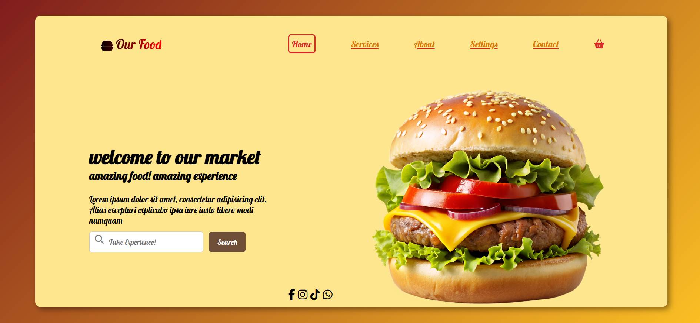
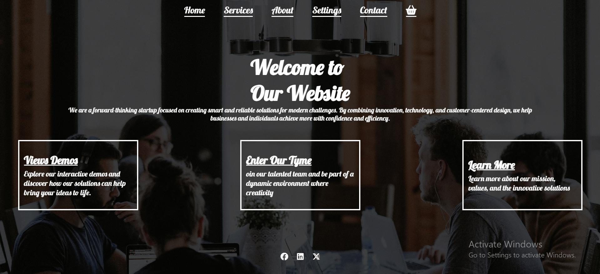
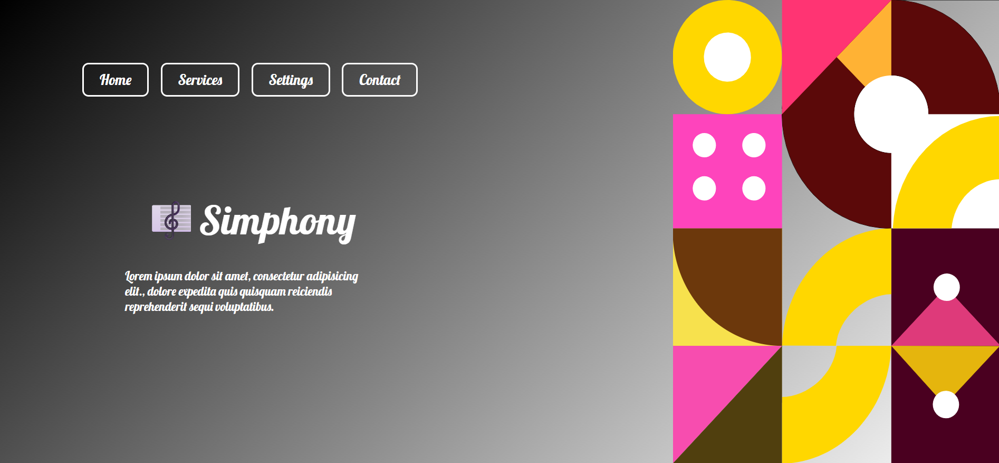

Through these projects, I strengthened my front-end development skills by working with HTML, CSS, and JavaScript to build responsive and visually appealing websites. I gained practical experience in creating user-friendly interfaces, organizing content effectively, implementing interactive elements such as hover effects, and ensuring compatibility across different screen sizes and devices. These projects also improved my understanding of modern web design principles, typography, color selection, and overall user experience.
A modern and fully responsive burger restaurant website developed using HTML, CSS, and JavaScript. The project was designed with a clean and user-friendly interface, featuring a carefully selected color palette that is visually appealing and comfortable for the eyes.
The website consists of four main pages: Home, Menu, Services, and Contact, providing visitors with a complete browsing experience. High-quality images were used to enhance visual appeal, while modern design elements such as hover effects, shadows, and smooth interactions were implemented to create a more engaging user experience.
Throughout this project, I focused on responsive web design to ensure the website works seamlessly across different screen sizes and devices. This project helped me strengthen my skills in front-end development, layout design, user interface design, and creating visually attractive websites.

A modern and responsive startup website built using HTML, CSS, and JavaScript. The project features a clean and professional design with carefully selected colors and readable typography to provide a comfortable and engaging user experience.
The website includes a visually appealing background image, interactive hover effects, and well-structured sections that effectively present the company's services and information. Social media links were also integrated to improve connectivity and user engagement.
Throughout this project, I focused on creating a modern user interface, organizing content clearly, and ensuring responsiveness across different devices and screen sizes. This project helped me strengthen my skills in front-end development, responsive design, and user interface design.

A modern and responsive website developed using HTML and CSS, featuring an elegant design inspired by the world of music and art. The project uses a dark linear gradient background that creates a modern and visually appealing atmosphere.
The website incorporates carefully selected typography that reflects the artistic identity of the Symphony concept, along with clear and harmonious colors that enhance readability and improve the user experience. Interactive hover effects were also implemented to add a dynamic and engaging touch to the design.
One of the highlights of this project is the Symphony image, which I created and refined using skills gained from my experience in graphic design. This helped me establish a unique and consistent visual identity for the website.
Throughout the development process, I focused on creating an aesthetically pleasing layout, maintaining visual balance, and ensuring responsiveness across different screen sizes and devices. This project strengthened my skills in user interface design, color selection, typography, and transforming creative ideas into attractive and functional web experiences.
